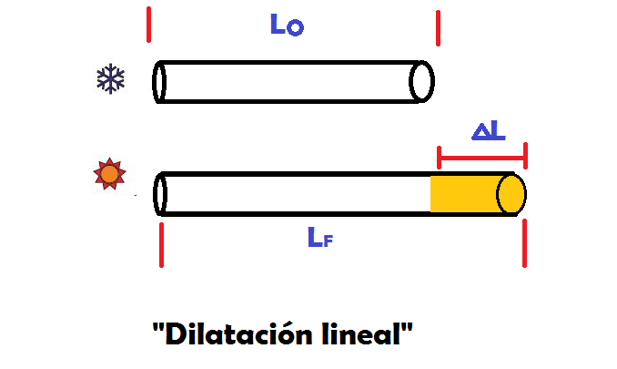
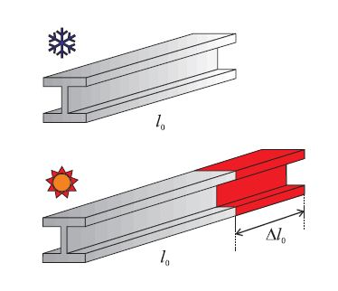

Dilatacion lineal de un resorte
La dilatación lineal es el fenómeno por el cual un objeto cambia su longitud en respuesta a una variación de temperatura. Este cambio es directamente proporcional a la longitud original del objeto y a la variación de temperatura. La fórmula que describe este fenómeno es Δ 𝐿 = 𝐿 0 ⋅ 𝛼 ⋅ Δ 𝑇 , donde Δ 𝐿 es el cambio en la longitud, 𝐿 0 es la longitud original, 𝛼 es el coeficiente de dilatación lineal del material, y Δ 𝑇 es el cambio de temperatura. Este concepto es fundamental en la ingeniería y la física, ya que permite predecir cómo se comportarán los materiales ante variaciones de temperatura, asegurando la integridad y funcionalidad de estructuras y dispositivos.
Historia
dame la histia de la dilatacion liena La historia de la dilatación lineal se remonta a los primeros estudios sobre las propiedades térmicas de los materiales. Aunque los antiguos griegos y romanos ya observaban que los materiales se expandían con el calor, no fue hasta el siglo XVII que se comenzaron a realizar estudios más sistemáticos. Uno de los primeros científicos en estudiar la dilatación térmica fue Galileo Galilei, quien en el siglo XVII observó que los materiales se expandían al calentarse. Sin embargo, fue el físico francés Guillaume Amontons quien, a finales del siglo XVII y principios del XVIII, realizó experimentos más detallados sobre la expansión térmica de los gases y sólidos. En el siglo XIX, el físico francés Jean-Baptiste Biot y el físico alemán Johann Carl Friedrich Gauss realizaron estudios importantes sobre la dilatación térmica de los sólidos. Estos estudios llevaron al desarrollo de la fórmula matemática que describe la dilatación lineal, que relaciona el cambio en la longitud de un material con su coeficiente de dilatación lineal y el cambio de temperatura. La comprensión de la dilatación lineal ha sido fundamental para el desarrollo de la ingeniería y la física moderna, permitiendo diseñar estructuras y dispositivos que pueden soportar cambios de temperatura sin sufrir daños.
Usos
Desde desarrollo web hasta consultoría, tenemos lo que necesitas para triunfar.
Puentes
Las juntas de expansión permiten que los puentes se expandan y contraigan con los cambios de temperatura, evitando daños estructurales.
Vías de tren
Las vías tienen espacios entre los rieles para acomodar la expansión y contracción debido a las variaciones de temperatura.
Termómetros
Los termómetros de mercurio o alcohol funcionan gracias a la dilatación lineal del líquido dentro del tubo.
Tuberías
Las tuberías de agua y gas deben diseñarse para manejar la expansión y contracción térmica para evitar fugas y rupturas.
Componentes electrónicos
En la fabricación de circuitos y dispositivos electrónicos, es crucial considerar la dilatación lineal para asegurar un funcionamiento correcto y evitar fallos.
Integrantes
>Diego hinojosa saavedra - 223156851
>Esteban Gomez - 223156825
>Jose Illescas - 223042935
>Ruben Pinto Caceres - 220002207